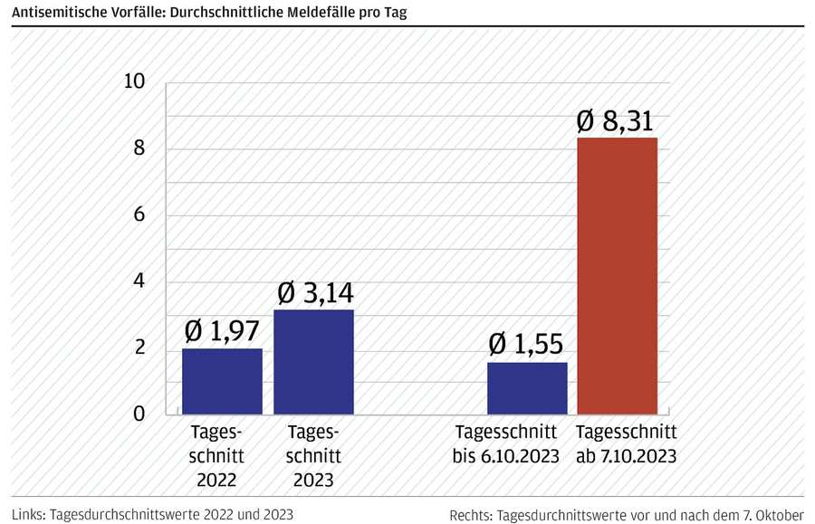
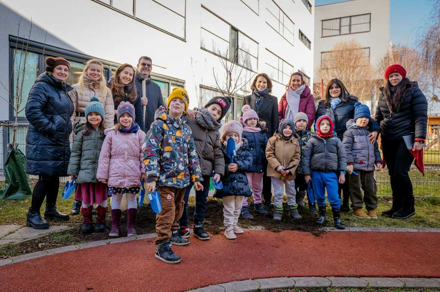

На заседании Совета по образованию 18 марта 2024 года обсуждались следующие темы:
Первоначально президент раскритиковал тот факт, что некоторые советы по культуре недостаточно серьезно отнеслись к требованию присутствия, в результате чего на заседание в феврале пришли только одиннадцать членов советов по культуре. Ни одно собрание не могло состояться без присутствия как минимум двенадцати из 24 членов. Такое поведение является неуважительным по отношению к тем, кто выполняет свои обязанности по посещаемости, и к членам сообщества.
Заседание в понедельник прошло успешно благодаря присутствию 19 членов управления культуры.
Реставрация и обновление городской синагоги к 200-летию
Строительство городской синагоги на Зайтенштеттенгассе было завершено в 1826 году – так что через два года приближается 200-летний юбилей. «Это хороший повод заняться необходимым ремонтом и реставрацией, отчасти из-за устаревших строительных технологий или текущих требований пожарной безопасности, чтобы 200-летие можно было отпраздновать в отреставрированной и отремонтированной синагоге», - сказал президент IKG Дойч. Квин Натали Нойбауэр (Атид), архитектор, вместе со своим коллегой Эриком-Эмануэлем Чайкнером из KENH Architekten ZT GmbH представила первоначальный каталог мероприятий, которые составят основу такой реконструкции и реконструкции. В частности, речь идет о переносе Венской городской синагоги в 2026 год – со всеми необходимыми аспектами, такими как доступность, противопожарная защита, технология строительства, акустика, вентиляция, отопление и т. д.
Поскольку городская синагога является памятником архитектуры, цель консультации с Федеральным управлением памятников состоит не в том, чтобы что-либо изменить, а лишь в том, чтобы восстановить и отремонтировать существующую структуру, подчеркнул Нойбауэр. С другой стороны, общественный центр не находится под охраной памятников. Рассматривается адаптация, которая лучше отвечала бы потребностям членов сообщества на праздниках и мероприятиях.
Все зависит от наличия необходимых ресурсов, пояснил президент IKG. Строительные работы не должны финансироваться из текущего бюджета IKG, а скорее за счет возможного государственного финансирования и сбора средств. Что необходимо сделать и что на самом деле можно сделать, станет ясно только в ходе переговоров с Федеральным управлением памятников. Затем отдельные сделки должны быть заказаны непосредственно IKG. KENH Architekten взимает с архитекторов соответствующие ставки гонорара (HOA 2004) за планирование и поддержку ремонтных работ; Нойбауэр предложила отказаться от десяти процентов этих сборов и, следовательно, от ее личной доли прибыли от этого заказа. За услуги, предоставленные двумя штатными сотрудниками KENH Architekten для этого крупного проекта, будет взиматься плата.
Совет по культуре единогласно одобрил ввод KENH Architekten в эксплуатацию на этих общих условиях и в рамках данного проекта реконструкции.
Отчет о поездке солидарности в Израиль
Мириам Браунстоун приняла участие в поездке солидарности в Израиль, организованной Европейским советом еврейских общин (ECJC) в феврале этого года в качестве представителя IKG Wien. В понедельник она сообщила в управление культуры о многих эмоционально трогательных встречах, а также представила множество фотографий. В фильме, снятом с места фестиваля, где гости из общин диаспоры встретились с двумя выжившими после нападения на участников фестиваля «Нова», которые рассказали, как им удалось спастись от террористов, шум войны был слышен из близлежащей Газы. Браунстоун рассказал о многих вынужденных переселенцах, которые в настоящее время размещены в отелях, а также о людях с «виной выжившего», покончивших с собой после 7 октября, включая водителя автобуса, который отвозил молодых людей на фестиваль «Нова». «Подобных историй много». Она положительно подчеркнула, что евреи в Израиле и евреи в диаспоре за последние месяцы сблизились друг с другом.
Подробный отчет об этой поездке вы можете найти на Wina.at.
Смена района IKG Wien: Вена
В понедельник совет по культуре одобрил некоторые изменения в уставе. Некоторые из них были сделаны по просьбе Управления образования и культуры, другие — по инициативе IKG. Президент Дойч представил в общей сложности десять поправок, каждая из которых обсуждалась и голосовалась индивидуально. Одобрение было единогласным по большинству пунктов.
Самое важное нововведение: Штирия и Каринтия больше не входят в состав округа IKG Wien. Это было задумано как временная мера, когда она была зарегистрирована в 2013 году, подчеркнул Дойч. Под руководством Эли Розена, назначенного IKG Wien от Штирии, в Граце теперь существует оживленная еврейская община; Консолидация здесь прошла успешно. Отныне в состав округа IKG Wien входят Вена и Нижняя Австрия, а также весь Бургенланд.
Это изменение в уставе также предусматривает, что в будущем до пяти омбудсменов больше не будут назначаться комиссией по назначению омбудсмена, а непосредственно Советом по культуре. Все члены культурного совета имеют право вносить предложения с учетом разнообразных традиций общества.
Отчет Центра по борьбе с антисемитизмом за 2023 год.

После 7 октября 2023 года количество антисемитских инцидентов выросло в пять раз по сравнению с предыдущими месяцами, сообщил генеральный секретарь Беньямин Нэгеле. Он представил совету по культуре годовой отчет Центра по борьбе с антисемитизмом за 2023 год. За весь 2023 год в центр отчетности поступило 1147 происшествий; в 2022 году произошло 719 инцидентов, 2021 965. В отчетном центре работают четыре сотрудника; из-за большого количества сообщений некоторые из них в последние месяцы работали в системе сортировки. Их задача – не только сохранить представленную сейчас статистику, но, прежде всего, сопровождать и заботиться о пострадавших.
Президент Дойч также сообщил о совместной пресс-конференции с конституционным министром Каролиной Эдтштадлер по теме антисемитизма в Интернете. Был представлен пакет мер против интернет-антисемитизма.
Охрану детского сада «Биби Сара» профинансируют до конца июня
В последние недели между исполнительным советом IKG и Ассоциацией бухарских евреев (VBJ) велись дискуссии о том, как можно гарантировать финансирование сотрудников службы безопасности детского сада «Биби Сара», испытывающего финансовые трудности, на ближайшие месяцы. IKG оставался здесь до конца февраля. Теперь VBJ предложил компромисс: ассоциация будет покрывать половину расходов в размере 7000 евро в месяц до конца июня, другая половина будет собрана IKG за счет сбора средств, сообщает Deutsch. Об этом уже проинформировали руководство детского сада. Президент IKG подчеркнул, что пока неясно, что будет с детским садом дальше в июле.
Между тем, на места в детском саду ZPC с сентября 2024 года уже стоит большая очередь, сообщила Натали Нойбауэр. Сейчас рассматривается идея удовлетворения спроса с помощью контейнерного решения, но это «недешевая затея». В перспективе, при необходимости, к школе ZPC можно будет пристроить еще один этаж, ответил Нойбауэр на вопрос КВ Арика Алаева (VBJ). Но для этого потребуются соответствующие средства в размере около шести миллионов евро. Это долгосрочный проект.
Медаль Федеральной ассоциации Полу Хаберу
Пауль Хабер, бывший профессиональный пловец, спортивный врач и давний президент SC Hakoah, будет награжден медалью Федеральной ассоциации за заслуги перед еврейской жизнью в Австрии. Совет по культуре решил это единогласно. Награждение планируется провести в середине апреля на следующем общем собрании Хакоа.
доклад президента

Президент IKG Дойч выступил с докладом на Генеральной ассамблее Европейского еврейского конгресса в Вене. Это было полностью связано с ростом антисемитизма во всем мире.
Министр Эдтштадлер посетил кампус ZPC в честь Ту Бишват и вместе с детьми посадил дерево.
В этом году поминальная церемония у Стены имен снова собрала большое количество посетителей.
Эли Розен попросил, чтобы IKG Wien позаботился о синагоге в Бадене в будущем, и именно это они и сделают сейчас. Здесь запланирована культурная программа. Также будут предприняты усилия, чтобы снова провести миньян в Бадене на большие праздники.
Президент объявил о крупной акции солидарности с Израилем и заложниками, все еще удерживаемыми в секторе Газа 7 апреля. Информация об этом будет опубликована своевременно.